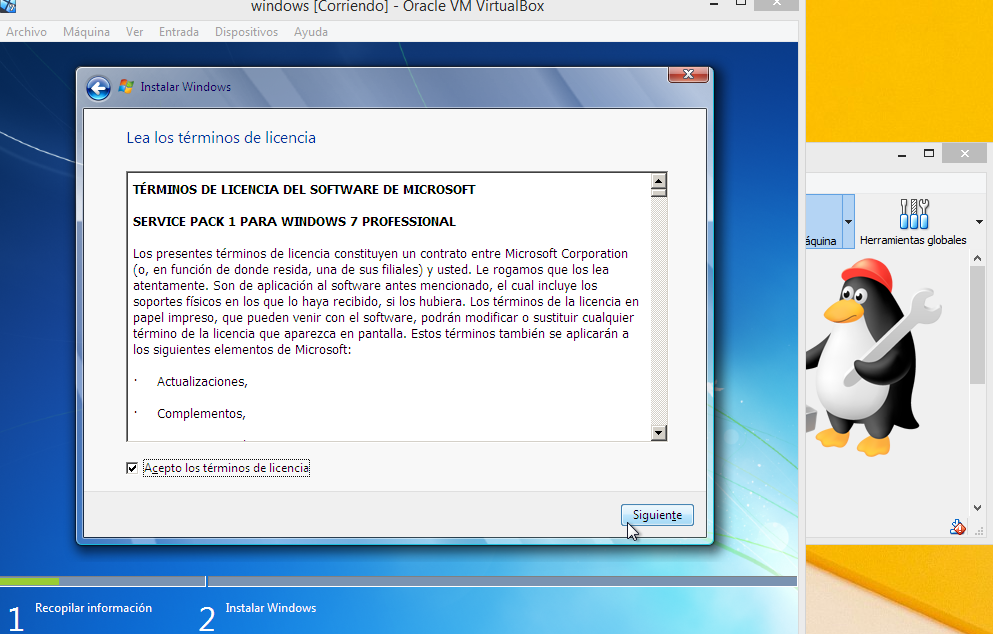

INSTALACION DE UN S.O. EN UNA MAQUINA VIRTUAL
Existen distintas aplicaciones para virtualizar sistemas operativos. VirtualBox, propiedad de Oracle, es una de las aplicaciones más utilizadas debido a su naturaleza de código abierto, al ser una aplicación gratuita y que funciona en prácticamente cualquier sistema operativo. Crear máquinas virtuales es muy práctico para aquellos usuarios interesados en probar nuevos sistemas operativos pero que, sin embargo, no quieren comprometer los datos ni el sistema actual de su equipo. Las máquinas virtuales son parecidas a contar con “un ordenador dentro de nuestro ordenador” pero con algunas limitaciones de hardware debido a que los componentes que se utilizan son virtualizados, no pudiendo exprimir el 100% del potencial del hardware real. Pasos para la instalación del sistema operativo:
1.- Clic sobre la máquina virtual y seleccionar el disco de arranque.
2.-Despues de haber cargado el sistema en la creación de la maquina personalizar el idioma y preferencias adicionales clic en siguiente.
3.- Clic en instalar ahora.
4.-Seleccionar el sistema operativo Windows 7 Profesional de 32 bits clic en siguiente.
5.- Aceptar los términos de licencia clic en siguiente.

6.-Seleccionar la instalación personalizada (avanzada).
7.- Verificar la instalación clic en siguiente y esperar a que cargue.
9.- Muestra que el programa está iniciando servicios.
10.- Muestra que el programa de instalación continuara después de reiniciar el equipo. Se reiniciará automáticamente y se prepara para el primer uso.
VIDEO